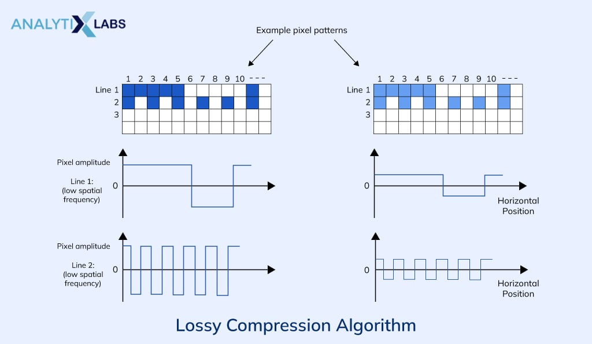

文件压缩算法会消除不必要的数据位, 导致永久性数据损失。 File compression algorithm eliminates unnecessary data bits, resulting in permanent data loss.
⚠️ 有损压缩定义 / Definition
✨ 重要特征 / Characteristics
不可逆性 / Irreversibility
一旦文件被压缩, 就不可能找回原始文件。数据损失是永久性的。
Once compressed, impossible to get the original file back. Data loss is permanent.
质量下降 / Quality Reduction
降低文件质量, 目标是在可接受的质量损失下获得最大压缩比。
Reduces file quality. Goal is max compression with acceptable quality loss.
高压缩率 / High Compression Ratio
可以实现比无损压缩更高的压缩率。
Can achieve higher compression ratios than lossless compression.
⚙️ 工作原理 / Working Principles
🖼️ 图像压缩策略 / Image Strategies
- 分辨率降低: 减少像素数量Resolution Reduction: Reduce pixel count
- 色彩深度降低: 减少颜色信息Color Depth Reduction: Reduce color info
- 频率域压缩: 移除高频细节Freq. Domain Compression: Remove high-freq details
🎵 音频压缩策略 / Audio Strategies
- 频率范围裁剪: 移除人耳听不到的频率Frequency Range Cutting: Remove inaudible frequencies
- 心理声学模型: 利用听觉遮蔽效应Psychoacoustic Model: Utilize auditory masking

⭐ 优势与限制 / Advantages vs. Limitations
优势 / Advantages
- 极高的压缩率 Extremely high ratios
- 适合多媒体数据 Suitable for multimedia
- 节省存储和带宽 Save storage & bandwidth
限制 / Limitations
- 数据不可恢复 Data is irreversible
- 质量有所损失 Quality is compromised
- 不适合重要文件 Not for critical files